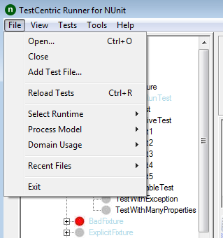
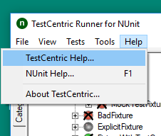

File Menu

Open...
Closes any open files and then displays a FileOpen dialog to allow selecting the name and location of an assembly or supported project file.
Close
Closes any open files.
Add Test File...
Displays a FileOpen dialog to allow selecting the name and location of an assembly or supported project file, which is then added to the currently open file set.
Reload Tests
Reloads the tests, merging any changes into the tree.
Select Runtime
Displays a list of runtime versions you may select in order to reload the tests using that runtime. This submenu is only present if you have more than one runtime version available.
Process Model
Allows the user to select how Processes are used loading and running the tests. Note that any selection other than Default will override process settings specified in an NUnit or other project file.
Default The tests use the NUnit engine default, which is Single for one assembly, Multiple for more than one.
In Process Tests are run in the same process as the GUI. This is useful for some types of debugging.
Single Tests are all run in the same process, separate from the process running the GUI itself.
Multiple Each test assembly is run in its own process, in parallel with other assemblies.
Run as X86 Force the tests to run in a 32-bit process or processes. This setting may be selected in combination with any of the other settings with the exception of In Process.
Domain Usage
Allows the user to select how AppDomains are used in loading and running the tests. Note that any selection other than Default will override domain settings specified in an NUnit or other project file.
Default The tests use the NUnit engine default, which is Single for one assembly, Multiple for more than one.
Single Tests are all run in the same AppDomain. When running in process, that AppDomain is separate from the domain in which the GUI itself is running.
Multiple Each test assembly is run in its own AppDomain. This setting is not permitted when running each assembly in a separate process, since there is only one test assembly per process.
Recent Files...
Displays a list of recently opened projects and assemblies from which the user is able to select one for opening.
Exit
Closes and exits the application. If a test is running, the user is given the opportunity to cancel it and or to allow it to continue.
View Menu
Full Gui
Displays the complete gui - as in prior versions of NUnit. This includes the errors and failures and other tabs and the progress bar.
Mini Gui
Switches the display to the mini-gui, which consists of the tree display only.
GUI Font
Displays a submenu that allows changing the general font used by the GUI.
Increase
Increases the size of the font.
Decrease
Decreases the size of the font.
Change...
Displays the Font Change dialog.
Restore
Restores the default font.
Fixed Font
Displays a submenu that allows changing the fixed font used to display console output from the tests.
Increase
Increases the size of the fixed font.
Decrease
Decreases the size of the fixed font.
Restore
Restores the default fixed font.
Status Bar
Displays or hides the status bar.
Tests Menu
Run All
Runs all the tests.
Run Selected
Runs the test or tests that are selected in the tree. If checkboxes are visible, any checked tests are run by preference. This is the same function provided by the Run button.
Run Failed
Runs only the tests that failed on the previous run.
Stop Run
Stops the test run. This is the same function provided by the Stop button. See the Main Window page for a detailed description.
Tools Menu
Save Test Results...
Opens a FileSave Dialog for saving the test results as an nunit3-formatted XML file.
Extensions...
Displays the Extensions Dialog.
Settings...
Displays the Settings Dialog.
Help Menu

TestCentric Help
Displays the TestCentric documentation.
NUnit Help
Displays the NUnit documentation.
About TestCentric...
Displays info about your version of TestCentric.